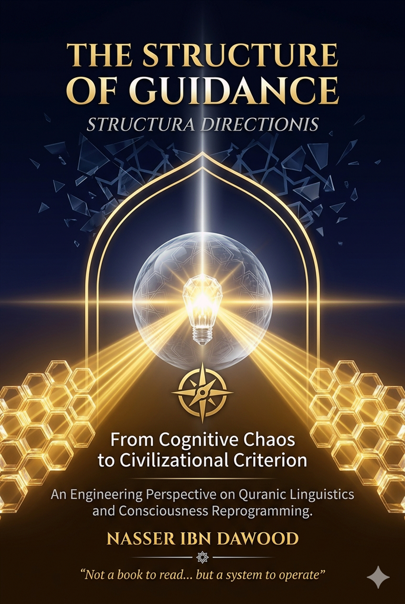

## From Cognitive Chaos to Civilizational Criterion
### An Engineering Perspective on Quranic Linguistics and Consciousness Reprogramming
**Author: Nasser Ibn Dawood**
---
Knowledge is a universal right. The author firmly believes that wisdom should not be locked behind paywalls or language barriers.
- **Global Access Policy:** All books in this library are available for free in multiple digital formats (PDF, HTML, DOCX, TXT).
- **The Digital Library:** As of early 2026, the collection hosts 68 volumes (34 in Arabic and 34 in English), fully optimized for AI-assisted research and digital archiving.
- **Official Platforms:**
- Main Website: nasserhabitat.github.io/nasser-books/
- GitHub: nasserhabitat/nasser-books
---
This English edition is a condensed conceptual adaptation. It is not a word-for-word translation, but rather an "extraction of essence." It presents the core philosophical framework in accessible English, omitting the exhaustive linguistic debates and classical references found in the original Arabic text.
**For the academic researcher:** The original Arabic version remains the primary source for comprehensive linguistic analysis, detailed exegesis (Tafsir), and the complete bibliography.
---
The contemporary Muslim mind does not suffer from a scarcity of sacred texts, nor from a lack of knowledge. The crisis is deeper and more subtle:
**A malfunction in the tools of perception themselves.**
The text remains present, but its ability to reshape reality has declined—not because the text has lost its power, but because the structure that receives it no longer functions as intended.
Throughout history, Quranic language has undergone what can be called a **structural semantic shift**, whereby its major concepts transformed from precise operational tools into vague emotional metaphors.
| Original Function | Became |
|-------------------|--------|
| Light (Noor) as a cognitive standard | A mysterious spiritual feeling |
| Heart (Qalb) as a knowledge-processing unit | The center of emotion |
| Criterion (Furqan) as a decision-making algorithm | A historical memory |
Consequently, concepts were emptied of their function, losing their ability to **direct behavior and construct reality**.
---
This book does not offer traditional interpretation, nor does it reproduce moral discourse in modern language. It proceeds from a radically different premise:
**Re-engineering consciousness by restoring the operational structure of Quranic language.**
This work proceeds from a central hypothesis: that the Quran presents a **complete, integrated knowledge system**—one that does not address emotions as an end goal, but rather reshapes the **structure of human perception**.
This system works to:
- Liberate humanity from the **chaos of darkness** (multiple, conflicting reference points)
- Bring it under the **authority of light** (unity of divine criterion)
### The Methodology: An Engineering Approach to Meaning
This book employs:
- Precise linguistic analysis
- Structural reading of concepts
- An engineering sensibility that perceives interconnections between parts—not as scattered ideas, but as a system operating through clear relationships
---
The work progresses through an integrated path:
1. **Establishing the Source** → The Chapter of Light
2. **Diagnosing the Dysfunction** → The Chapter of Darkness and Desire (Hawa)
3. **Understanding the Processing Mechanism** → The Chapter of the Heart
4. **Engineering Decision-Making** → The Chapter of the Criterion (Furqan)
5. **Activating Behavior** → The Chapter of Behavior and Civilization (Umran)
6. **Achieving Activation** → Living Light, Purification (Tazkiyah), Continuous Revelation (Tanzil)
---
If you ask yourself, *"Why do we read the Quran but fail to find its direct impact on our contemporary reality as the first generation did?"* this book offers a distinct, "engineering" answer.
The crisis is not in the Quranic text, but in our "perception tools." Major concepts have undergone a "semantic shift" across history.
This book employs the methodology of **"Fiqh al-Lisan"** (Jurisprudence of the Tongue) to perform a reverse-engineering of these concepts, treating Quranic words as precise software units:
| Traditional View | Engineering View |
|------------------|------------------|
| Heart = Emotion | Heart = Central Processing Unit that filters information |
| Light = Mystical feeling | Light = Standard/Measure for uncovering truth |
| Purification = Moral advice | Purification = Periodic system update to cleanse "cognitive viruses" |
The ultimate goal is not "theoretical knowledge," but the transition from **cognitive chaos** (scattered reference points, confused decisions) to **civilizational criterion**—the clarity that makes a person "illuminated," capable of building and reforming their environment.
### 4. The Outputs: How to Read This Book
This book is designed as a **"User Manual"** for your life. At the end of each chapter, you will find "operational outputs" and practical protocols telling you clearly: How to apply these concepts in your **home, work, and relationship with yourself**.
**In short:** You are about to enter a journey of dismantling the masks and shadows that obscure truth, returning to the primordial nature (Fitra) that harmonizes with cosmic laws and the spirit of revelation.
---
The concept of "light" in contemporary religious consciousness has undergone a deep semantic shift—from a foundational element in the engineering of Quranic guidance to a fluid emotional experience, reduced to inner feelings of radiance or purity.
This shift did not merely simplify the concept; it dismantled the structural relationship between revelation, perception, and behavior. Light became sought for itself as a state, rather than activated as a tool.
In contemporary discourse, light is presented as:
- A subtle spiritual energy
- An inner illumination
- An experiential taste
This understanding contains three structural imbalances:
1. **Reification of light** – Transforming it into a "substance" that moves within a person
2. **Separation of light from revelation** – Despite the Quran directly connecting them
3. **Exclusion of the cognitive function** – In favor of emotional experience
A precise linguistic distinction restores the concept: The Quranic distinction between "Dhiya" (radiance) and "Noor" (light).
> *"It is He who made the sun a shining radiance (dhiya) and the moon a light (noor)"* (Quran 10:5)
This distinction is not merely astronomical description but carries a functional meaning:
- **Dhiya (radiance):** A property inherent to the source, characterized by intensity and emission
- **Noor (light):** A functional property related to making vision possible
**Thus: Light is not what produces energy, but what makes vision possible.**
> *"There has come to you from Allah a light and a clear Book"* (Quran 5:15)
Revelation is light because it is the **cognitive medium without which truths remain existent but invisible.**
### The Verse of Light: The Cognitive Structure of Guidance
> *"The parable of His light is as a niche within which is a lamp..."* (Quran 24:35)
This verse does not describe a physical phenomenon but builds a **complete cognitive ontology**:
**Deconstructing the elements:**
- **The Niche (Mishkat):** The containing structure (the existential framework)
- **The Lamp (Misbah):** The source of illumination (revelation)
- **The Glass (Zujajah):** The filtering medium (the heart/mind)
- **The Oil (Zayt):** The latent readiness (the primordial nature/Fitra)
**The Glass as a Filtering Mechanism**
> *"The glass as if it were a brilliant star"* (Quran 24:35)
Its function:
- Protects light from dissipation
- Filters radiation from interference
**Hence: Faith is not emotional fullness, but cognitive filtration.**
Surah An-Nur (Chapter 24) does not present light as an abstract concept but directly connects it to a legislative system:
- Lowering the gaze
- Seeking permission to enter homes
- Social purity
This reveals that: **Light = A system for organizing vision within society.**
Light is no longer an internal experience but a **social visual structure that prevents the violation of persons.**
One of the most important linguistic keys:
- **"Light"** appears in the singular
- **"Darknesses"** appears in the plural
> *"Darknesses, one above another"* (Quran 24:40)
This indicates that:
- **Darknesses = Multiple sources of disturbance**
- **Light = Unity of reference**
**Redefining Darkness:**
> **Darkness = A state of cognitive randomness resulting from multiple reference points and the absence of a unifying standard.**
### The Structural Schema of Transformation
| From Darkness (Cognitive Randomness) | To Light (Guidance System) |
|--------------------------------------|---------------------------|
| Multiple standards → | Unity of reference → |
| Blurred vision → | Clarity of vision → |
| Disordered behavior → | Upright behavior → |
| Disintegrated civilization → | Ordered civilization |
---
Contemporary religious consciousness treats the "heart" as a center for feeling and emotion, or a vessel for faith in its emotional sense. This has produced a misleading dualism:
- **Intellect (Aql) = Thinking**
- **Heart (Qalb) = Feeling**
But the Quran redistributes functions differently, making the heart the **center of deep perception**, not merely a repository for emotion.
> *"They have hearts with which they do not comprehend"* (Quran 7:179)
This verse decisively establishes the function:
- **Comprehension (Fiqh)** = Deep understanding
- **Attributed to the heart**
The heart can be reconstructed as having three functional layers:
1. **Reception:** Receiving data (revelation + reality)
2. **Filtration:** Purifying inputs from interference
3. **Direction:** Producing judgment and making decisions
> *"The glass as if it were a brilliant star"* (Quran 24:35)
In the symbolic structure, **the glass = the heart**.
Its function:
- Filtering light
- Preventing dissipation
- Directing radiation
The clearer the glass → the clearer the vision. The murkier the glass → the more distorted the perception.
**Hence: Faith is not fullness, but clarity.**
The Quran does not describe the heart as emotionally sick, but cognitively disordered:
> *"In their hearts is a disease"* (Quran 2:10)
The disease here is not weak feeling but **a dysfunction in the processing mechanism.**
Types of dysfunction:
- **Hardness (Qaswah):** Loss of cognitive flexibility, lack of interaction with data
- **Sealing (Khatm):** Cessation of reception, system closure
- **Deviation (Zaygh):** Distortion of processing, skewed reading of reality
**Inputs (Revelation + Reality) → Filtration (Purification) → Reasoning (Operation) → Judgment (Assessment) → Behavior (Execution)**
---
Contemporary religious consciousness accumulates knowledge but fails at the moment of action. This schizophrenia is not due to a lack of "light" (knowledge), but to the absence of a mechanism to transform it into practical choice.
Here, the concept of **Furqan** emerges as the missing link.
The root indicates: **Separation while revealing the dividing line.**
- **Faraqa:** To separate between two things
- **Al-Farq:** The distance that separates
- **Al-Furqan:** The tool/capacity that reveals the dividing line clearly
> **Furqan is not merely knowing the difference, but the ability to manifest it practically when things are intermingled.**
> *"O you who believe, if you fear Allah, He will grant you a criterion (furqan)"* (Quran 8:29)
Structural analysis:
- "If" → Condition
- "You fear Allah" → Internal discipline
- "He will grant" → Operational gift
- "A criterion" → Tool for discrimination
**Furqan is not a primary given, but the result of an internal operating system (Taqwa/Fear of Allah).**
1. **Receiving data (Light):** Perceiving options, understanding context
2. **Filtration (Taqwa):** Purifying from desire (Hawa), restraining bias
3. **Resolution (Furqan):** Revealing the dividing line, choosing the path
**Light (Guidance) → Heart (Reception) → Taqwa (Purification) → Furqan (Discrimination) → Behavior (Execution)**
Without Furqan: Light → Heart → Hesitation → Stagnation
> *"Do not follow desire, lest it lead you astray from the way of Allah"* (Quran 38:26)
- **Desire (Hawa):** Uncontrolled bias
- **Furqan:** Objective standard
**The real struggle is not between knowledge and ignorance, but between Furqan and Hawa.**
---
The contemporary human suffers from "perceptual alienation"—transformed from an active manager of inputs into an emotional being falling under the tyranny of external stimuli (chaotic reality) or internal impulses (desire).
The Quranic human is the being who has succeeded in restoring their **"perceptual sovereignty"** by activating the "Light of Revelation" as the basic operating system, enabling the transformation of the heart from a vessel for random emotions into a laboratory for "filtration" and production of the "Criterion" (Furqan).
**1. The Principle of "Perceptual Distance" (Consciousness Before Action):**
The Quranic human does not practice automatic reaction. Between stimulus and response exists a zone called the "Furqan Zone." In this distance, reality is presented to the "Light of Revelation," filtered through the "glass of the heart," neutralizing the forces of desire, so that the decision emerges as disciplined behavior.
**2. The Principle of "Unity of Reference" vs. "Multiplicity of Darkness":**
In a world where darkness multiplies (confused reference points), the Quranic human adheres to "Light" (the single standard). Monotheism (Tawhid) here is not merely a theological issue but the **"unification of the data source"** upon which understanding is built.
**3. The Principle of "Sovereignty over the Engine" (Desire as a Noise Force):**
The Quranic human recognizes that desire (Hawa) is not merely a moral evil but a **"technical flaw in the vision mechanism."** Therefore, they do not seek to "repress" themselves but to "manage" their psychological engines.
**4. The Principle of "Civilization as a Digital Output":**
Behavior is the "value added" that the human offers to existence. Righteous action is not an isolated act but a **"brick in the wall of civilization"** that emerges as an inevitable result of perception that has been straightened by light.
| Stage | Passive Human State | Quranic Human State |
|-------|---------------------|---------------------|
| Data Reception | Surrender to darkness (multiple references) | Adherence to light (unity of standard) |
| Processing | Emotional heart (emotional amplification) | Perceptual heart (filtration and reasoning) |
| Decision-Making | Response to desire (subjective bias) | Activation of Furqan (decisive discrimination) |
| Outputs | Random behavior (disintegration) | Directed movement (civilization) |
---
In traditional religious consciousness, purification (Tazkiyah) is presented as:
- A moral call
- Or behavioral refinement
But this conception—despite its importance—remains incapable of explaining why many people fail to change despite "knowing" the good.
The answer lies in the fact that the problem is not in "behavior" alone, but in **the structure that produces behavior.**
The human is born with a pure primordial nature (Fitra), but over time acquires:
- Social roles
- Mental images
- External expectations
Forming what can be called the **Mask**.
The danger of the mask emerges when "what we perform" becomes confused with "what we are."
The shadow is not evil, but a part of the self that needs understanding. It is everything you have refused to acknowledge in yourself:
- Repressed anger
- Undirected desire
- Hidden fear
- Desire for control
> *"He has succeeded who purifies it, and he has failed who buries it"* (Quran 91:9-10)
Purification does not mean **removing the shadow**, but **transforming it from a random force into directed energy.**
True change does not occur except at the moment of **radical honesty with oneself**—to see yourself as you are, not as you would like to see yourself.
After confrontation, the engineering dimension enters: **Managing internal energy.**
- Anger → Transforms into strength to defend truth
- Desire → Transforms into constructive energy
- Ambition → Transforms into a mission
**The principle: Do not cancel the energy... direct it.**
> **Revelation → Acceptance → Confrontation → Direction → Light**
The true transformation that purification creates is:
**From: A human driven by their emotions**
**To: A human who consciously leads themselves**
---
Muslims agree that revelation has been completed textually, but the problem is not in its completion—it is in **how its effect continues in life.**
A deep flaw appears in contemporary consciousness:
- Revelation has been reduced to a "text to be recited"
- Rather than understood as a "force that operates reality"
- **Nuzul (Descent):** The historical event of the Quran's revelation to the Prophet—a completed event in time.
- **Tanzil (Continuous Revelation):** The ongoing process of activating meaning within consciousness in the present moment.
> **Tanzil = The activation of meaning within consciousness in the present moment.**
The Quran is not:
- A book of information
- Nor a cultural text
But: **A system that reshapes perception.**
**Text → Understanding → Perceptual Transformation → Behavior → Reality**
> *"And We send down of the Quran that which is healing and mercy to the believers"* (Quran 17:82)
The healing here is not merely psychological but:
- Cognitive + Perceptual + Behavioral
The Quran does not merely remove the problem—it **rebuilds the way of seeing the problem.**
Because they begin from the outside:
- Laws
- Institutions
- Slogans
While ignoring the **human's cognitive system.**
**The Quranic rule: True change begins from within.**
Civilization is not:
- Buildings
- Technologies
But: **The product of a collective perceptual pattern.**
- If perception is disordered → Civilization is disturbed
- If perception is illuminated → Civilization is balanced
### The Human as Bridge Between Text and Reality
The human is the **point of transformation between revelation and the world.**
- If the human is disabled → Revelation stops
- If the human is activated → Text transforms into civilization
> **Text → Contemplation → Consciousness → Behavior → Reality → Re-contemplation**
---
After establishing the concept of **Light** as a cognitive system in Quranic language, a critical problem emerges:
Why does light remain, in many religious experiences, merely an "understood idea" rather than transforming into a "life-operating force"?
Contemporary consciousness—despite its access—suffers from a dangerous disconnection:
**Knowledge without operation... Light without effect.**
In common consciousness: Heart = Center of emotion.
But in the Quranic structure: Heart = Center of perception, discrimination, and direction.
**Light begins from within.**
**(a) Intention (Niyyah): Preparing the Perceptual Direction**
- Determines the meaning of action
- Directs perceptual energy
- Without it → Action becomes movement without light
**(b) Remembrance (Dhikr): Continuous Reference Feeding**
> *"Unquestionably, by the remembrance of Allah do hearts find tranquility"* (Quran 13:28)
Tranquility here is not merely a psychological state but the **stability of the cognitive system.**
Dhikr is continuous reconnection with the source.
**(c) Repentance (Tawbah): System Reset**
- Sin = Disturbance
- Repentance = Restoration of clarity
When these mechanisms operate → The heart becomes:
- Transparent
- Stable
- Capable of receiving light
Thus fulfilling: **"Light upon light."**
The home is not a place... but a state.
The home is a mirror of the heart.
**The light does not remain internal... it expands.**
Society is not merely individuals but an **interconnected perceptual network.**
Each individual affects:
- The consciousness of others
- Their behavior
**If individual light does not become social... it withers.**
Work reveals truth.
Perception can be claimed, but work does not lie.
Transforming work into light:
- Intention (Niyyah) → Transforms work into worship
- Excellence (Itqan) → Expression of clarity of vision
- Responsibility → Internal stability
| Period | Practice |
|--------|----------|
| Morning | System preparation (intention + remembrance) |
| During the day | System operation (behavior + interaction) |
| Evening | System evaluation (review + repentance) |
> **Perception → Operation → Review → Upgrade**
The true transformation called for is not "to feel the light" but "to live by it."
**Light is not an experience but a standard.**
**Not a feeling but a system.**
**Not a moment but a path.**
---
Imagine you have been playing a game since birth, without knowing its true rules. You are on a journey—struggling, feeling pain, feeling joy, searching for meaning—while deep within you lies an open book called **the Self**, which you have not yet read.
This game is not absurd. It is a **journey of consciousness, a test of purification, and a manifestation.**
> *"He who created death and life to test you as to which of you is best in deed"* (Quran 67:2)
Life is a divine game—not in the sense of entertainment, but in the sense of **test and consciousness.**
In this game, a human is born with a pure heart, then the world dresses them in many masks:
- The mask of the dutiful child
- The mask of the diligent employee
- The mask of the pious person before others
Until they become captive to what they think is "them," forgetting their true face behind appearances.
> *"They know an outward aspect of the worldly life, but of the Hereafter they are heedless"* (Quran 30:7)
The mask is not evil, but it becomes a prison when you think it is your reality.
Purification begins with removing this mask—to say honestly: *God, show me myself as I am, not as I love to see myself.*
Behind the mask dwells your shadow—that part of yourself you have denied:
- Your repressed anger
- The desire you feared
- The greed you never acknowledged
> *"He has succeeded who purifies it, and he has failed who buries it"* (Quran 91:9-10)
The shadow is not evil—it is an opportunity for knowledge. When you acknowledge it and train it, it transforms from a hidden beast into a conscious servant, from destructive energy into energy for worship.
Each prophet is a door from among the doors of the spiritual path. The prophets were not merely men sent to distant peoples—they are **intellectual and psychological stations** through which every believer passes in their purification journey.
| Prophet | Station |
|---------|---------|
| Adam | Discovering your first error, learning that repentance is the door of return |
| Noah | Remaining steadfast amid the flood of materialism |
| Abraham | Breaking the idols within you—idols of wealth, desire, ego |
| Joseph | Remaining beautiful despite wounds, patience in the well and prison |
| Moses | Confronting the Pharaoh of your own self |
| Muhammad (peace be upon him) | Complete balance between intellect, spirit, and action |
Each prophet is a **mirror of your internal path.** Their stories are not tales of a bygone era but symbols of an ongoing journey in every heart moving toward God.
Some psychological schools recommend isolation to contemplate oneself. But Islam does not call you to escape from life but to **conscious work within it.**
> *"Seek the home of the Hereafter with what Allah has given you, and do not forget your share of the world"* (Quran 28:77)
Purification is not withdrawal from people but presence among them with a different light. You work in the marketplace, but your heart is in heaven. You live among people, but you are connected to the Absolute.
In the end, the winner is not the fastest player but the most conscious. The victor is not the one who collected the most points but the one who knew the direction.
> *"Allah is the Light of the heavens and the earth... Light upon light"* (Quran 24:35)
Light is the end of the game and its beginning. It is the moment when you see everything in its correct place:
- The mask becomes a tool
- The shadow becomes a teacher
- Life becomes a sanctuary
1. **Begin with honesty with yourself** – Who am I really behind this face?
2. **Acknowledge your shadow and embrace it** – Do not curse your weakness, understand it.
3. **Follow the stations of the prophets** – Each messenger is a lesson in divine psychology.
4. **Work in this world with an eye on the next** – This world is a passage, not a destination.
5. **Strive toward the light** – Every path is illuminated by sincere intention.
---
This book was not an attempt to add a new interpretation to what has been written, nor to reformulate moral discourse in modern language. It was a quest for something deeper:
**Rediscovering the operational structure of guidance in Quranic language.**
One of the most important transformations this work presents is:
Moving religion from being "content to be believed" to being "a system to be operated."
- Faith is no longer mere belief but a **perceptual pattern that directs vision.**
- Worship is no longer mere ritual but **mechanisms for calibrating the internal system.**
- The Quran is no longer a text to be read but an **engine that reshapes consciousness.**
Guidance is not a random event but an **interconnected chain of operations:**
> **Revelation → Perception (Light) → Discrimination (Furqan) → Behavior → Civilization (Umran)**
- **Light:** Not adding information, but correcting the method of vision.
- **Furqan:** Not merely moral judgment, but a mechanism for choosing between paths.
- **Tazkiyah:** Not superficial refinement, but internal system reconstruction.
- **Tanzil:** Not a past event, but a present process.
This book has proven that the greatest field for guidance is not the text... but **the human.**
The human is:
- The one who receives revelation
- The one who processes it
- The one who translates it into reality
If this "processor" is disabled → The effect of revelation stops.
If it operates → The text transforms into civilization.
What societies experience today is not a lack of:
- Texts
- Knowledge
But: **A disconnection in the operational structure.**
- Understanding without application
- Worship without consciousness
- Behavior without reference
Civilization is not a political decision... but a perceptual result.
Every true civilizational transformation passes through:
> **Conscious individual → Disciplined behavior → Balanced social network → Mature civilizational system**
Guidance is not merely a religious concept but a **law governing the relationship between perception and reality.**
**The Rule:**
- If perception is straightened → Behavior is straightened → Reality is straightened
- If perception is corrupted → Everything after it is corrupted
### The Responsibility of the Reader: From Reception to Operation
This book does not ask its reader merely to be convinced but to **experiment... to operate... to rebuild themselves.**
Because understanding—no matter how great—has no value if it does not transform into **existential transformation.**
The world today lives in a state of:
- Information saturation
- Perceptual emptiness
In the midst of this chaos, the solution is not more information but **the Criterion (Furqan)** —the ability to:
- Discriminate
- See
- Choose
> **Revelation → Light in the heart → Furqan in decision → Uprightness in behavior → Civilization in reality**
**The Result:**
Not merely a righteous individual, but a **more balanced world.**
---
This book is not an invitation to religiosity but to **enlightenment.**
Not a project for individual salvation alone but for **building a human capable of carrying light... and crafting civilization.**
The journey we began from "cognitive chaos" does not end at "understanding guidance" but reaches its peak at **the realization of the Criterion in reality.**
---
The journey of this book ends with a call to individual responsibility. By restoring the "Internal Compass," the human being stops being a victim of external chaos and starts becoming an architect of their own reality, aligned with the Creator's silent presence in all things.
**The house is not what we inhabit, but what inhabits us.**
**The house is not stone, but presence.**
**The house is not a roof, but the sky of consciousness.**
**The house is not a door to be opened, but a door to be unveiled.**
The journey was not a path to God... but a **return from forgetfulness to closeness, from estrangement to the house.**
---
**Praise be to God, in whose light all things are seen.**
**Nasser Ibn Dawood**
*Casablanca, Morocco*
*April 2026*
---
*End of the condensed English edition*